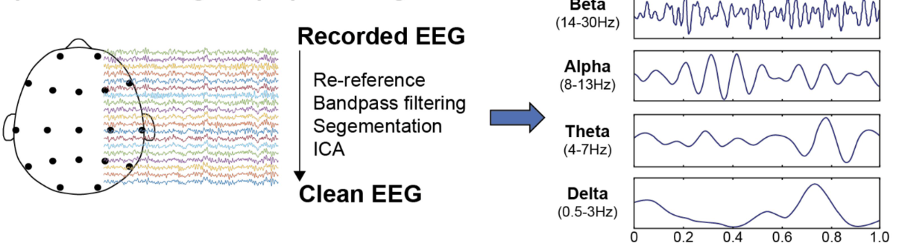

Machine Learning for Objective Neurodiagnostics Using Traditional ML Models
This project explores the use of traditional machine learning models to classify Attention Deficit Hyperactivity Disorder (ADHD) versus neurotypical controls using electroencephalogram (EEG) signals. The goal is to develop accessible, objective tools to support clinical diagnoses, which are currently reliant on subjective behavioral assessments.
ADHD diagnoses are often based on subjective reports, leading to potential misdiagnosis. EEG offers a non-invasive, cost-effective approach to capture neural signatures. This project investigates whether EEG-derived features like theta/beta ratio, alpha power, and slow wave activity can serve as reliable biomarkers to distinguish ADHD from neurotypical individuals.
IEEE dataset containing EEG recordings from children aged 7–12 years, with balanced representation of ADHD and neurotypical control groups.
19 EEG channels (Fz, Cz, Pz, C3, T3, etc.) recorded at 128 Hz sampling rate using standard 10-20 electrode placement system.
Bandpass filtering (1–50 Hz), Independent Component Analysis (ICA) for artifact removal, and 2-second epoching with 50% overlap.
Three neurophysiologically relevant feature types: Theta/Beta Ratio, Alpha Power (8–13 Hz), and Slow Wave Activity (<12.5 Hz).
Rigorous quality control including artifact detection, channel validation, and statistical outlier removal to ensure clean datasets.
We implemented and compared three traditional machine learning models, each chosen for their proven effectiveness in biomedical signal classification:
Linear and RBF kernels for both linear and non-linear pattern recognition, with hyperparameter optimization via grid search.
Ensemble method providing feature importance insights and robust performance across different feature types.
Instance-based learning with optimized k-value selection and distance metric evaluation for local pattern recognition.
Best Result: SVM with Theta/Beta Ratio features achieved 80.6% accuracy and 77% precision, demonstrating strong potential for clinical application. This performance significantly exceeds chance level (50%) and approaches clinically relevant thresholds.
| Model | Accuracy | Precision | Clinical Relevance |
|---|---|---|---|
| KNN | 73.2% | 75% | Good baseline performance |
| Random Forest | 77.3% | 71% | Strong feature importance insights |
| SVM | 80.6% | 77% | Best overall performance |
| Model | Accuracy | Precision | Performance Note |
|---|---|---|---|
| KNN | 63.0% | 60% | Moderate discriminative power |
| Random Forest | 60.6% | 54% | Lower performance on alpha features |
| SVM | 68.0% | 67% | Most consistent across features |
| Model | Accuracy | Precision | Clinical Insights |
|---|---|---|---|
| KNN | 62.7% | 57% | Captures local neural patterns |
| Random Forest | 67.6% | 69% | Good precision for slow waves |
| SVM | 68.3% | 67% | Balanced classification performance |
SVM with Theta/Beta Ratio features achieved the highest accuracy (80.6%), demonstrating the clinical relevance of this biomarker.
Theta/Beta Ratio > Slow Wave Activity > Alpha Power in terms of discriminative power for ADHD classification.
SVM demonstrated the most consistent performance across all feature types, making it the most reliable classifier.
Frontal and central EEG channels showed the highest discriminative power, aligning with neurobiological understanding of ADHD.
The 80.6% accuracy achieved with traditional machine learning models demonstrates that EEG-based biomarkers can effectively support ADHD diagnosis. This performance level approaches the reliability needed for clinical decision support tools, potentially reducing diagnostic subjectivity and improving access to objective assessment methods.
This research contributes to the development of objective, data-driven diagnostic tools for ADHD, potentially improving diagnostic accuracy and accessibility. The methodology can be extended to other neuropsychiatric conditions, advancing the field of computational psychiatry and precision medicine.